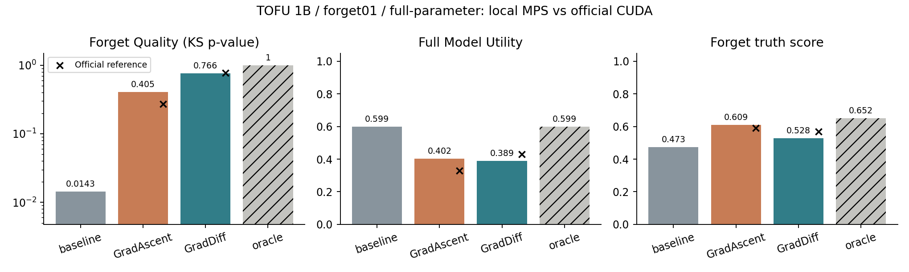

官方 1B · forget01 · 全参数 · 原 GA/GD遗忘指定资料，保留其他能力
选择原实验中的小模型和小遗忘划分，保持原算法、参数空间与完整核心评价，在 Mac 上重做对照。
本机运行原模型、GradAscent 和 GradDiff。Oracle 来自官方公开参考记录；它没有使用遗忘数据进行 TOFU 微调。所有来源在表格中分开标注。
完整评价结果
| 模型 | FQ（p 值） | 完整 MU | 遗忘 truth score | 遗忘 ROUGE | 来源 |
|---|
每个本机模型覆盖 657 题。FQ 是 KS 检验 p 值，不是遗忘准确率；应与保留能力和实际回答共同判断。
与官方结果逐项比较
固定 seed=0 的单次复现；方向一致也不等于统计显著或彻底遗忘。设备和明确记录的环境差异可能影响数值。
MU 九项拆分
完整 MU 是九项调和平均。保留资料上的改善，可能被其他领域的下降抵消；请结合分项判断。

直接看真实回答
回答来自已保存模型重新加载后的逐题实测。Oracle 回答为官方记录导入。额外问题可通过项目中的实问入口运行。
我们核验了什么
- 原损失与评价核心文件未改动；模型、数据和结果记录版本及哈希。
- 保留全部约 12.36 亿参数；内存适配使用 FP32 AdamW 状态暂存。
- 实际优化器更新数与训练计数一致；零学习率时全部参数保持不变。
- 基础模型输入、目标与官方逐题核对；不混用旧版重复开头标记的回答。
完整结果与边界 · 从头讲清项目 · 复现协议 · 汇总数据 · 固定版本官方表
正在加载完整实测记录……